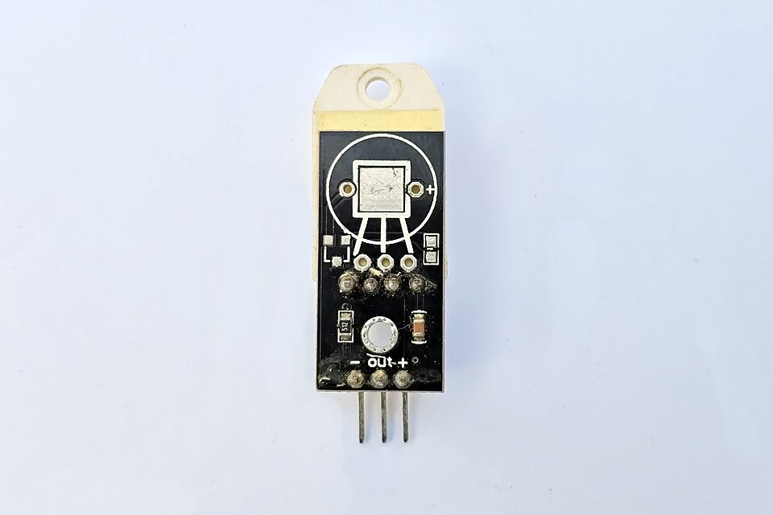

Temperatura · Umidade
DHT22 (AM2302)
Mede temperatura e umidade relativa do ar num só módulo. Usa um termistor e um sensor capacitivo, com um chip interno que já entrega o valor pronto por 1 fio.
- Specs
- -40 a 80 °C (±0,5 °C) · 0–100 % UR (±2 %) · 3–5 V
- Sinal
- Digital (1 fio)
- Aplicações
- Climatização, estufas, salas técnicas
- Projeto
- Estação meteorológica publicando dados por MQTT
Fabricantes: Aosong · Adafruit · genéricos